← 返回阅读库 · 原论文目录
论文讲解阅读文档 · 机器人学 · v103
DrQ Data regularized Q[2004.13649]
视频时长 00:10:43；讲解文字 4,507 字符；提取讲解画面 22 张。按视频原顺序阅读，每段文字保留时间戳。
文字来自整段视频的自动语音转写，按自然停顿分段，并与 PPT / 论文页面 / 演示画面对齐。未将讲解压缩为摘要；术语、数字和口述公式请结合画面及原论文核对。 阅读稿已校正规范部分明确术语误识别；原始逐字稿和每处修改记录另行保留。
讲解画面为源视频截图（640×360），不是可编辑 PPT 文件。全片按每秒 2 帧扫描内容变化，逐步展开页保留；连续动画保留代表画面。清晰度受源视频限制。
下载完整资料包 · 含离线 HTML、PDF、Word、全部 PPT 画面和字幕。
原论文与材料
Image Augmentation Is All You Need: Regularizing Deep Reinforcement Learning from Pixels · 下载完整 PDF（22 页）
按时间阅读
00:00:00–00:00:28 · 画面 001
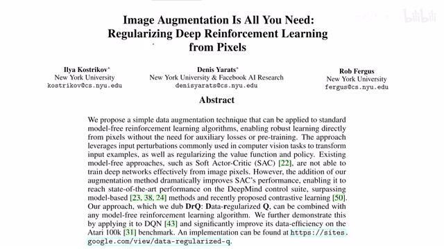
00:00:00–00:00:28 · 画面 001大家好,今天我们来介绍 Image Augmentation is All You Need Regularizing Deep Reinforcement Learning from Pixels那么这篇论文呢,作者研究的就是我如何把 Image Augmentation 或者说是 Data Augmentation应用到 Reinforcement Learning 里面那么在这个动机之下呢,作者提出了 Data Regularized Q这种方法呢,就像胶水一样可以把不同的图像增强策略
结合到任何 Model-free 的 Reinforcement Learning 的算法当中
00:00:28–00:00:50 · 画面 002
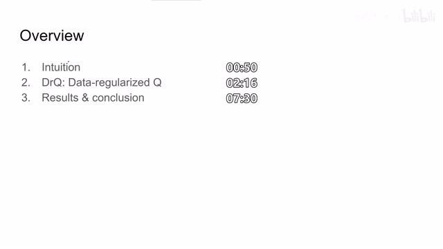
00:00:28–00:00:50 · 画面 002那么在今天的视频中首先我们会介绍本文的出发点它的动机是什么限制了我们把图像增强这些用在原来用在传统的计算机视觉领域非常好用的这些技巧是什么限制了它们应用到我们这个 reinforcement learning 当中随后我们会介绍本文提出方法的具体的实现以及最后是作者汇报的实验和结果
00:00:50–00:00:51 · 画面 003
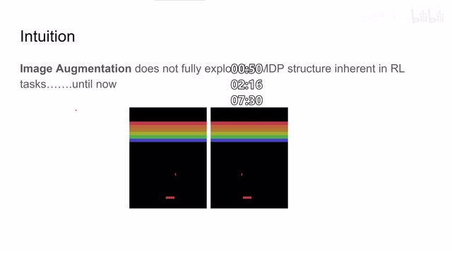
00:00:50–00:00:51 · 画面 003那么首先我们先来回忆
00:00:51–00:02:17 · 画面 004
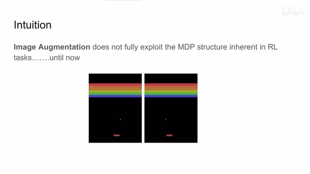
00:00:51–00:02:17 · 画面 004我们常见的图像增强策略有哪一些呢比如说增加噪声改变一点颜色旋转一下图像或者说在图像中截一块比如水平翻转等等这些东西这些东西虽然对我们在自然环境中拍摄到的图像它是有很大的帮助的而且它们不会改变图像的语义但是在 reinforcement learning 当中我们的图像 observation 其实就是作为我们的一个 state 那么 observation 中一些细小的变化就可以轻易地改变我们 state 的状态还有很多更严重的后果比如说像这个Atari 环境这个 breakout 的环境那么我把这个图像水平翻转一下那它代表的这个图像的语义包括对应我的操作的逻辑就完全变掉了你如果说把这样的这个增强过的样本也放到我们的 reinforcement learning 的训练当中本来训练一个 policy 就是一个很困难很敏感而不稳定的这么一个过程你再把这些困难的具有迷惑性的图像加到样本里面那是不是就更难得到一个满意的结果了呢
那么因此作者就想我能不能设计出一种框架有意识地给我们的 policy 增加难度使它能够获得一点对于这个图像的鲁棒性当然像这种直接改变语义的这种图像增强是就没有解的我们也不会想着会去从这种图像增强中来获得点什么性能提升然后我们来看作者具体怎么样实现他的这个想法
00:02:17–00:04:17 · 画面 005
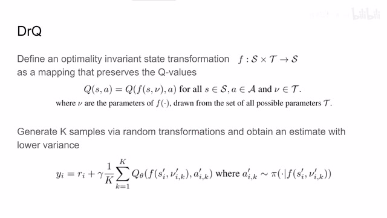
00:02:17–00:04:17 · 画面 005那么首先我们回顾一下我们最经典的 qlearning,qlearning 就是我们维护一个 function,这个 function 它的输入是当前的状态 state,还有我当前的这个 action,我来用一个 function 来评价说这个 state action 的组合它的 qvalue 是怎么样的,那么随着我们的 state 变成了图像,它的状态空间变得非常的大,我们就使用一个 convolutional neural network 来作为这个 function 来得到一个 qvalue。
那么这个呢是 qlearning 的基本的思想那么作者就想我现在呢是使用不同的图像增强策略这里是比如说它的参数是 v 把这个 v 和 s 组合起来来进行图像的变化得到一个新的真那么这个变化的过程呢我们叫做 f 嘛我们把这个图像增强叫做 f 那么一开始呢这个图像增强过的 f 在我的网络中它所对应的 qvalue 肯定是不一样的那么我能不能通过一种方法来训练我们的网络使它知道下次面对这种由一个图像增强产生的不同的样本的时候依然能够把这些看起来不同的样本映射到一个相同的 Q value 上呢于是呢作者就想到了我首先得在 target value 上下功夫现在我们回忆一下 Bellman equation 它的 target valueY 等于这个 reward 加上 discount factor gamma
乘上后面的这个 q value 这个 q value 呢它的输入应该是 state prime 和 a prime 也就是当前 state action pair 它的下一个时刻的 state 还有下一个时刻的最优的 action 它们这个组合来产生的这个 q value 那么于是呢作者就想我从这个 s prime 中使用不同的这个随机的图像增强的策略来获得 k 个样本那么它得到的这个 K 个样本呢它肯定是有不同的 Qvalue 的那么我选取这 K 个样本的 Qvalue 的平均值作为我们 target value 中的 Qvalue 它是不是就能够增强稳定性来减少这个数据的波动呢
00:04:17–00:04:49 · 画面 006
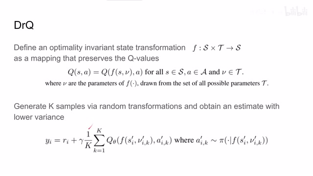
00:04:17–00:04:49 · 画面 006那么于是呢我们原来的 Bellman equation 这里是γ Q S'和 A'那这里就变成了一个 K 个样本的平均值那其中呢每个样本呢就是根据 S'来进行不同的随机的这个图像增强的策略来产生的样本这样呢作者就把图像增强放到了 target Q value 里面同样呢我们既然能够对 S'来做图像增强我们能不能对我们一开始的这个状态 s 也做图像增强呢？那答案当然也是可行的。我们再次回忆我们的 qlearning，它在更新的时候我们有一个 online network。我们先需要估计当前这个样本 state action pair 它在这个 online network 中的 qvalue，然后对比这个 qvalue 和我们的 target value 的差距，然后产生一个梯度来训练我们的 online network。那么这里呢，我在这个当前状态 s 的基础上
00:04:49–00:05:52 · 画面 007
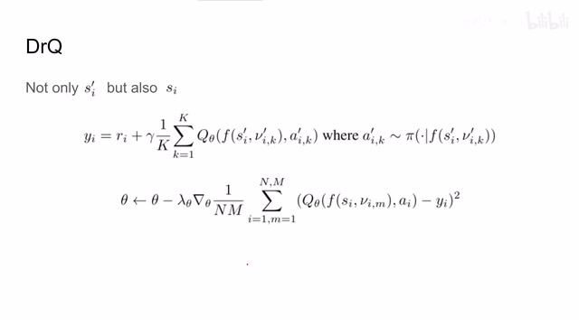
00:04:49–00:05:52 · 画面 007通过不同的随机的同样增强策略产生出 m 个增强过的样本。那么是不是也同样有 m 个 qvalue？那么与之前相类似的，我也把这 m 个 qvalue 取一个平均值，是不是就可以作为我当前这个状态的 qvalue 的一个估计？那么在有了这个 online network qvalue 之后呢，我们对比这个 qvalue 和 target value 就可以产生一个稳定的 loss 来向之前传递那么这里的 n 是一次一个 batch 用样本的数量，m 就是每个样本中我们对 state 产生的增强过的样本的数量。所以说这篇论文的核心思想其实是非常简单的，就是每当我在需要估计 qvalue 的场合，我不是使用原来的一个样本
00:05:52–00:06:25 · 画面 008
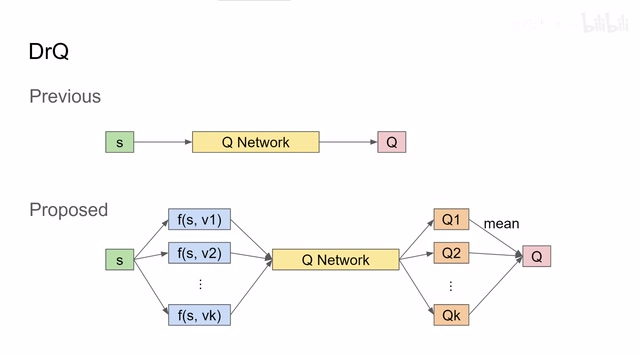
00:05:52–00:06:25 · 画面 008去计算出一个 q value，我是从原来的一个样本变换出 k 个或者是 m 个增强过后的样本，然后把这些增强过后的样本呢送到我们的这个 network 当中得到 m 个或者是 k 个不同的 q value。然后呢把这些 q value 求平均值，求平均值得到这个 q value 呢就是作为最终的我们对一开始这个状态的它的 q value 的估计。那么这里呢我们看一下作者提供的这个算法流程
00:06:25–00:07:11 · 画面 009
00:06:25–00:07:11 · 画面 009这是一个标准的 actor critic，那么主要是我们在训练 critic 的时候，我们是从原来的原始样本上直接产生一个 action，直接产生一个 qvalue。但现在呢，我们是使用 k 个不同的增强过的样本来产生不同的 k 个 qvalue，然后呢对他们求平均，平均过后的结果作为最终的 qvalue。那么这是我们计算 target value 的部分。那同样呢，我们在计算这个 forward 这个 value 的时候把原来的一个样本替换成 m 个增强过的样本，那么再求平均值得到这个平均值作为我们的网络对原来单个样本的最终的一个估计。那么一样可以计算 loss 产生梯度来更新整个这个网络。所以作者说本文提出的方法呢可以和任何 model free 的这个 reinforcement learning 方法兼容
00:07:11–00:07:12 · 画面 010
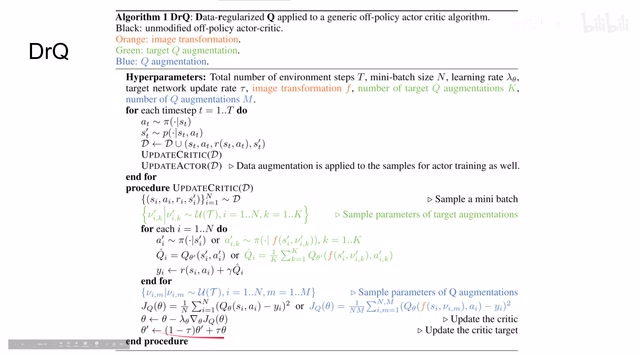
00:07:11–00:07:12 · 画面 01000:07:12–00:07:13 · 画面 011
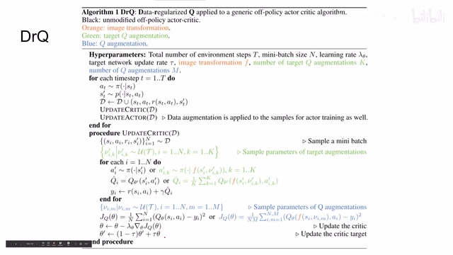
00:07:12–00:07:13 · 画面 01100:07:13–00:07:30 · 画面 012
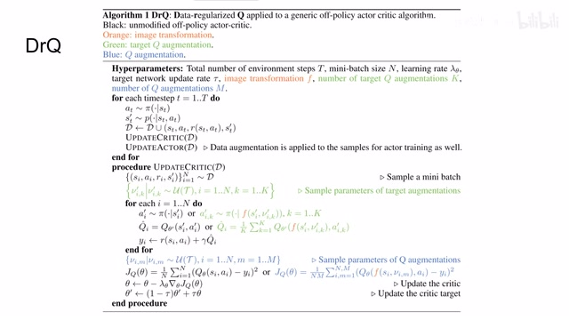
00:07:13–00:07:30 · 画面 012因为就是从原来一个样本直接估计一下,变成原来一个样本,先变成 n 个样本,估计出 n 个值,再做平均作为最开始的估计,那么其实就是这一个差别。好的,然后我们看到作者汇报的结果,从 DMC Planet Benchmark 上,绿色的线是本文提出的方法,可以看到本文提出的方法是 outperform 其他的知名的这些基于视觉的方法的,而且看起来本文的方法它的曲线是更加稳定的。
00:07:30–00:07:47 · 画面 013
00:07:30–00:07:47 · 画面 01300:07:47–00:07:48 · 画面 014
00:07:47–00:07:48 · 画面 014那么这个黑色的虚线呢是使用了 soft actor critic，但是呢这个 soft actor critic 它的输入呢是直接拿到系统的状态，比如说每个关节的信息，所以说它的性能肯定是要比我们从图像中获取的性能理论上应该是要更好的。但实际上我们看到本文提出的方法已经和这个从 state state vector 中训练出了 reinforcement learning 的方法它的性能是接近的。那么这边呢有具体的数据
00:07:48–00:08:14 · 画面 015
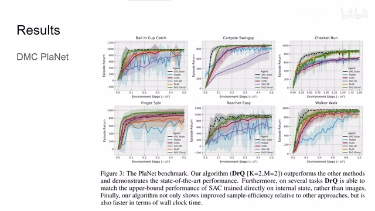
00:07:48–00:08:14 · 画面 01500:08:14–00:08:32 · 画面 016
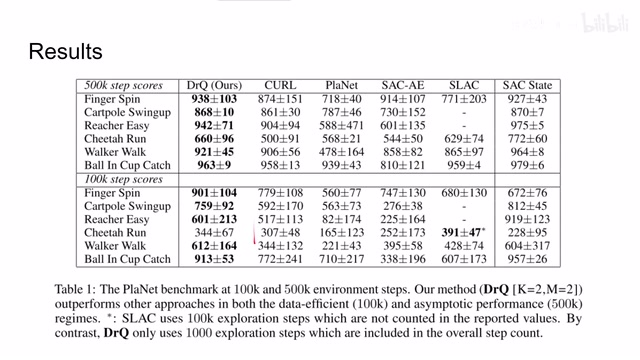
00:08:14–00:08:32 · 画面 016可以看到在这几个任务里面，本文提出的方法 outperform 的其他大部分的方法。然后呢和在这个 STATE 上训练的 SAC 它的表现呢是接近的。那么作者呢还汇报了 Atari 环境下的成绩，在论文的附录里面大家可以自行去查看。那么下面呢就是本文最精髓的部分，就是刚刚我们说了这么多
00:08:32–00:09:22 · 画面 017
00:08:32–00:09:22 · 画面 017我们可以把图像增强放到这个我们的 reinforcement learning 的框架当中。那么我们应该具体的拿哪一种图像增强策略来训练我们的 policy 呢？那这里作者帮我们试了几种，像 random shift 这个跟之前 curl 它的图像增强的策略很接近，但是呢比 curl 的它的幅度要小。这里呢作者是使用了一个原来因为原始图像是 84x84 的这么一个图像，作者呢把他们的边框复制了四个像素然后呢，再随机的把这个图像切回 84 到 84 的这么一个框架，相当于随机的把图像移动了一下。那作者还试了随机的在图像中切除一块区域，水平或者是竖直翻转图像，轻微的这么转动一下图像，甚至是调整图像的亮度啊，等等等等。然后呢，作者测试了这些不同的图像增强策略对我们性能的表现的影响，可以发现呢
00:09:22–00:09:26 · 画面 018
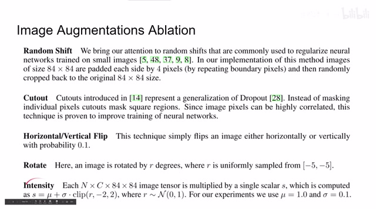
00:09:22–00:09:26 · 画面 01800:09:26–00:09:50 · 画面 019
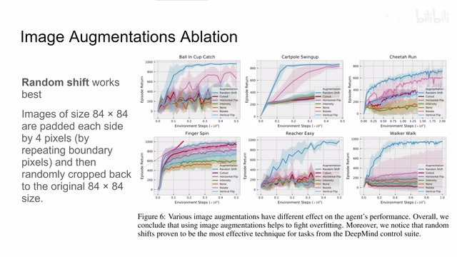
00:09:26–00:09:50 · 画面 019就是使用 random shift，也就是我随机的移动一下图像的位置，效果是最好的。这是一个非常简单的 trick，实现起来非常快，但是它产生的效果呢，却意外的好于其他这些效果。这也给我们后面训练 reinforcement learning 这些方法带来一个很不错的思路。那么此外呢，作者还对比了使用图像增强之前和使用图像增强之后，可以看到呢，使用图像增强之前呢，我哪怕再增加训练的
00:09:50–00:10:15 · 画面 020
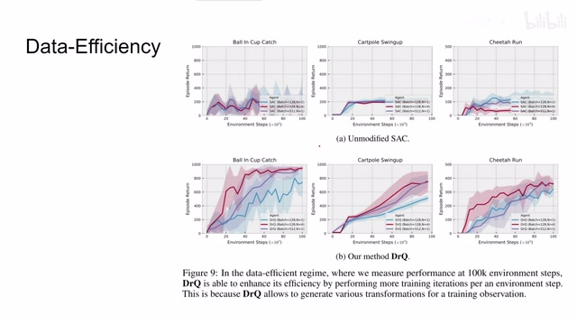
00:09:50–00:10:15 · 画面 020次数，在一定程度之后呢，这个网络基本上也就这样了。但是呢，如果我使用一些图像增强策略，那么随着训练次数的增加呢，网络的 reward 的性能，网络的 reward 的整个的模型的性能表现呢，会慢慢的增加。那么总的来说呢，本文最大的贡献就是提出了一种
00:10:15–00:10:42 · 画面 021
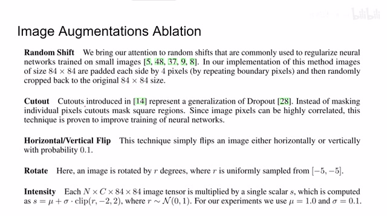
00:10:15–00:10:42 · 画面 021把图像变成 N 个增强过来的图像之后，再求平均值得到我们 Qvalue 这样一种框架方法。然后还帮我们试了这五种图像增强策略，发现这种非常简单的 random shift 它的效果是最好，而且这种方法实现起来非常快速，上手没有难度，是非常有意思的一个发现。好的，以上就是我对这篇论文的简单的分析，感谢您的收看，再见
00:10:42–00:10:43 · 画面 022
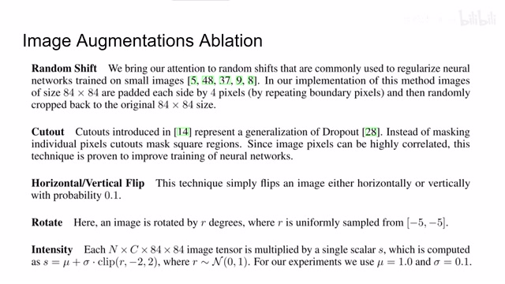
00:10:42–00:10:43 · 画面 022转写与来源说明 · 13 个自动复核提示
保留 46 个原始语音片段，13 个片段触发自动复核提示。提示仅用于定位可能的术语、重复或识别问题，不等于已确认错误。
讲解画面为源视频截图（640×360），不是可编辑 PPT 文件。全片按每秒 2 帧扫描内容变化，逐步展开页保留；连续动画保留代表画面。清晰度受源视频限制。
原视频：paper/合集_2026-10-16_机器人学/[论文简析]DrQ Data regularized Q[2004.13649].mp4
SHA-256：064774f15fe023d672087f6f120456d3342c6d90ca35d89ac71c1b6b96802bde
那么在今天的视频中
首先我们会介绍本文的出发点
它的动机
是什么限制了我们把图像增强
这些用在原来用在传统的计算机视觉领域
非常好用的这些技巧
是什么限制了它们
应用到我们这个 reinforcement learning 当中
随后我们会介绍本文提出方法的具体的实现
以及最后是作者汇报的实验和结果
那么首先我们先来回忆
我们常见的图像增强策略有哪一些呢
比如说增加噪声
全文按视频语音与画面制作。原论文可从上方链接下载；完整资料包保留全文、原始逐字稿、字幕和校对记录。